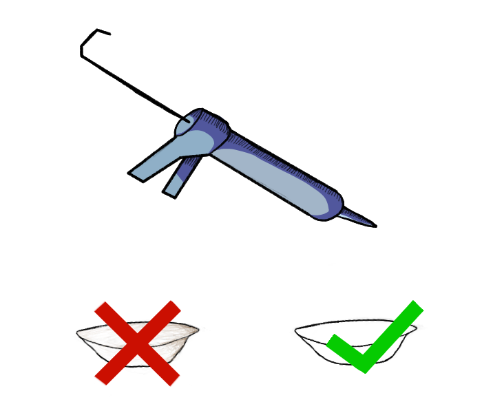
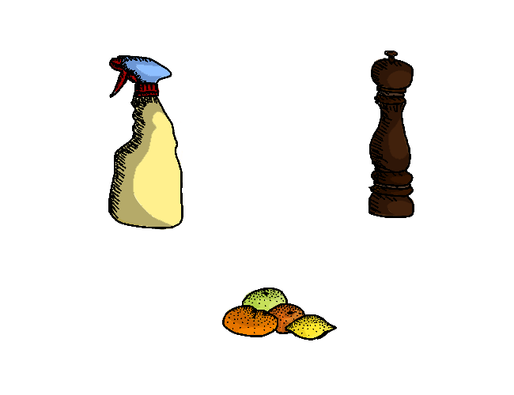
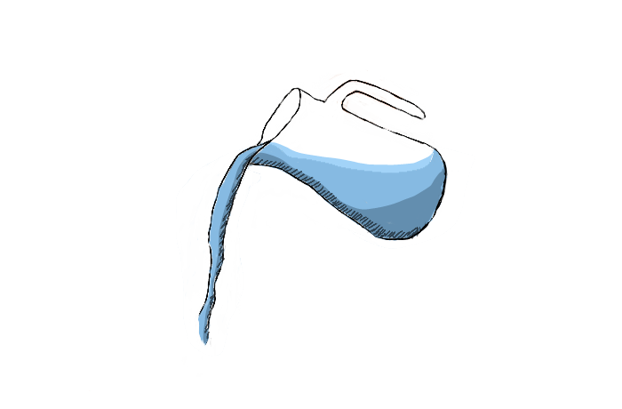
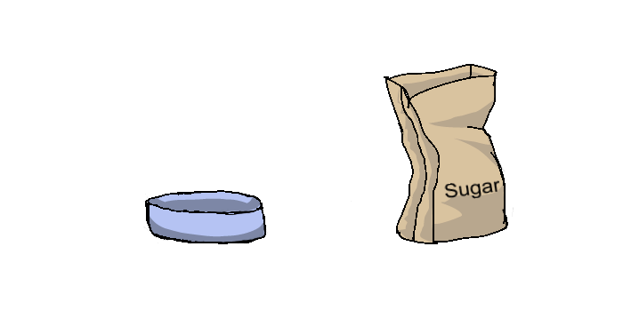
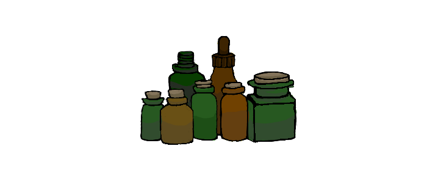
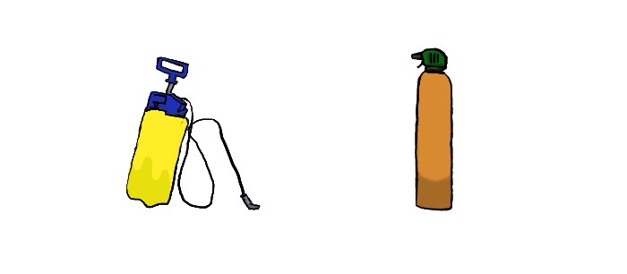

What you can do

Filling up cracks with caulk or putty products can block the entrance ants may be using.
Making sure areas are clean, particularly if food has been involved is particularly important to stop attracting ants.
Household ant irritant and deterants

Any glass or detergent is recommended to be wiped along an ant pathway. This removes the pheromone communication trail which means any messages an ant may have left behind to signal another ant will be removed.
Additionally, items such as pepper (black, red, white etc), citrus fruits and coffee grounds are found to be somewhat effective at detering ants if placed around areas the ant might want to get in.
Household items that can kill ants

A mixture of 1 part white vinegar, 2 parts water can both repel and kill ants if sprayed around edges and cracks an ant might come in.
A common method for if you know where the ant hole and it's enterances are is to pour boiling water into it, though is less effective if not all the points of entry are 'boiled'.
Make an ant trap

Using products such as boric acid, borax and silicon dioxide in a mixture of water and sugar will successfully kill ants. Simply put it in a small container where the ants will find it and take care that it is not found by children or pets.
Essential Oils

If you want to stay away from man made chemicals, you can look into natural repellants such as neem, peppermint and lemon eucalyptus oil. Simply adding 10-15 drops into 100mls of water and spraying areas that ants are around should be effective.
Stronger essential oils like cinnamon leaf, tea tree and oil of lemon eucalyptus (the gum of the tree) are able to kill ants.
Professional options

There are also ant extermination services available for particularly bad infestations, not to mention a variety of commercial bug bombs, ant sprays and ant traps.